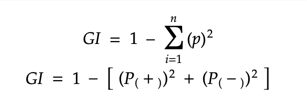

If the data we are dealing with is qualitative or categorical , then also decision trees are proved to be powerful.
Decision Tree Classifiers make use of a series of calculated questions regarding the attributes of the test record, for
each returned value a follow-up question is asked and hence the splitting is performed from the attributes of the data .
This is done until a conclusion about the class label of the record is reached. The difference between the working of a
classification and a regression tree lies in the criteria taken for performing a split.
While decision tree regressors use RSS criteria , Classification trees calculate and use 3 criteria for splitting the
nodes , Classification error rate , Entropy and Gini impurity.
Let us now learn about each of them separately.
Understanding the Algorithm working behind :
Before discussing the criteria , let us briefly talk about the overview of working of a classification tree for a better
understanding about why they are needed.
So the algorithm of building of a decision tree is recursive in nature. At each step, a decision has to be made for
further splitting till the last node (leaf node). The decision is based on some question which has an answer in either
True or False, and as the response of these questions, we make a split. The algorithm decides which question to ask and
when. So we keep narrowing down the data in the form of a tree arranging and distributing it according to it’s classes
or label. Now since the data is arranged according to classes, whenever any unknown data is given the tree, it can be
easily navigated through the tree to predict it’s class or label.
So as discussed, the critical point is deciding which question to ask and when. Basically, every node gets the list of
columns(or features) of the dataset as input.
So ‘the best question to ask’ is selected by calculating ‘how much an attribute will contribute towards distribution
into classes’, (calculated by Gini Impurity and Entropy). Further by using another value of ‘how much of the impurity is
reduced’ (calculated by Information gain), we can decide which attribute/feature should be taken as the node to split
and proceed further.
This calculation and selection procedure keeps happening in a recursive fashion till the whole tree is built.
So now we are ready to understand the criteria in more depth with an example data:
Entropy:
So now we are ready to understand the criteria in more depth with an example data:

Where c is the no. of classes and ‘p’ at every point(for each class) is the probability of that class.
Suppose we are dealing with a data with n observations to classify it into 2 categories: A or B. Let the no. of
instances of class A be x.
So we have c =2 , p1 = x/n and p2 = n-x/n . In this case the Entropy E can be obtained as :
E = -p1*log2(p1) – p2*log2(p2)
Here is the graphical representation of Entropy :

If we compare the graph with the example we discussed above, we can figure out that Entropy is Maximum when
probabilities for both classes are Equal, and 0 when probability is 0 or 1 this also validates that the entropy is the
amount of disorder(or mix-ups) in the data.
Information Gain :
Information gain is the measure the decrease in entropy after splitting a node. It is the difference between entropies
before and after the split. The more the information gain, the more entropy is removed. Significantly, it helps to
calculate importance and ordering of the attributes in the nodes.
Here is the mathematical representation of Information Gain:
Gain(R,C) = Entropy(R) – Entropy(R,C)
Here, R represents the root node of the tree and C represents the child obtained after splitting the node R.
Gini Impurity :
Gini impurity is the measure of possibility of a new random data to be classified wrong if that new instance were
randomly classified according to the distribution of class labels from the data set.
It is calculated by multiplying the probability that a given observation is classified into the correct class and sum of
all the probabilities when that particular observation is classified into the wrong class.
Here is the mathematical representation of Gini Impurity:

Where n is the no. of classes and ‘p’ at every point(for each class) is the probability of that class.
Suppose we have 2 classes + and - , then we can calculate the Gini Impurity as follows:
Example and Calculation:
Now let us take all the concepts from above and frame them into an example to solve a problem!
Before proceeding further, Let us define few terms used below:
• Root Node – The First node of the tree having the highest hierarchy
• Leaf Node – The nodes at the end of the tree which don’t have any child
• Pruning - Tree pruning is the method of trimming down a full tree (obtained through the above process) to reduce the
complexity and variance in the data.
• Internal Node -
The Camera Data :
This dataset contains 3 column in which the purchased is the target feature
• Camera No of camera in a mobile phone
• Gender Gender (male or female)
• Purchased whether the person purchased the phone with the specified camera count or not

We will use both Gini Impurity and Entropy as the criteria one by one to find the root node for building the tree, for
clear comparison and understanding
• Gini Impurity of Camera Feature :
Let us start by calculating Gini Impurity of the feature Camera.
For calculating probability we can arrange the entities of camera feature in the data like this:

The camera feature has 4 unique values, therefore we can calculate Gini for each type of value and further calculate a
weighted Avg as the Gini impurity of camera feature
G(Camera 1) = 1 – P(YES)]2 - [P(NO)]2
= 1 – (3/4)2 – (1/4))2
= 0.375
G(Camera 2) = 1 – P(YES)]2 - [P(NO)]2
= 1 – (1/3))2 – (2/3))2
= 0.444
G(Camera 3) = 1 – P(YES)]2 - [P(NO)]2
= 1 – (1/3)2 – (2/3)2
= 0.444
G(Camera 4) = 1 – P(YES)]2 - [P(NO)]2
= 1 – (3/4)2 – (1/4)2
= 0.444
• Weighted Sum of Gini Impurity for Camera feature :
G(Camera) = (n * (Cam 1) )/m * G(cam 1) + (n * (Cam 2) )/m * G(cam 2) +
(n * (Cam 3) )/m * G(cam 3) + (n * (Cam 4) )/m *
(cam 4)
= (0.2857 * 0.375) + (0.2142 * 0.444) +(0.2142 * 0.444 )+ (0.2857 * 0.375 )
=0.4044
Therefore, Gini Impurity of camera feature = 0.4044
• Gini Impurity of Gender Feature :
Now let us calculate Gini Impurity of the feature Gender.
For calculating probability we can arrange the entities of camera feature in the data like this:

Since the gender feature has 2 unique values, therefore we can calculate Gini for each type of value and further
calculate a weighted Avg as the Gini impurity of gender feature
G(MALE) = 1 – P(YES)]2 - [P(NO)]2
= 1 – (3/7)2 – (4/7)2
= 0.489
G(FEMALE) = 1 – P(YES)]2 - [P(NO)]2
= 1 – (5/7)2 – (4/7)2
= 0.408
• Weighted Sum of Gini Impurity for Gender feature :
G(Gender) = (n * (Male) )/m * G(Male) + (n * (Female) )/m * G(Female)
= (0.5 * 0.49) + (0.5 * 0.408)
= 0.449
Therefore, Gini Impurity of gender feature = 0.449
On comparing we find Gini(Camera) < Gini(Gender), therefore Camera is selected as the root node
Now, Let us find the root node by calculating Entropy:
• Entropy of the whole Dataset :
(This will be used further for calculating entropy of particular features)
E(S) = - P(YES)* log2 (P(yes)) - P(NO)* log2 (P(NO))
= 8/14*log(8/14) - 6/14*log(6/14)
= -[0.57 * (-0.81) + 0.428 * (-1.22)]
= 0.462 + 0.5228
= 0.985
Since the Camera feature has 4 unique values, therefore we can calculate Gini for each type of value and further
calculate a weighted Avg as the Entropy of Camera feature
E(camera 1 ) = 3/4*log(3/4) - 1/4*log(1/4)
= - [0.75 * (-0.12) + 0.25*(-0.602)]
= - [-0.09 – 0.150]
= 0.240
E(camera 2 ) = - 1/3*log(1/3) - 2/3*log(2/3)
= - [0.333 * (-0.4777) + 0.666*(-0.176)]
= - [-0.158 – 0.115]
= 0.275
Similarly we can calculate, E(Cam 3) = 0.275 and E(Cam 4) = 0.240
Weighted Sum of Entropy for Camera feature :
E(G) = 4/14 * (0.240) + 3/14 * (0.275) + 3/14 * (0.275) + 4/14 * (0.240) = 0.252
So, Entropy of camera feature = 0.252
Therefore, Information Gain for Camera : = 0.985 – 0.252 = 0.733
Since the gender feature has 2 unique values, therefore we can calculate Gini for each type of value and further
calculate a weighted Avg as the Entropy of gender feature
Entropy of Gender :
E(Male ) = - 3/7*log(3/7) - 4/7*log(4/7)
= -[0.428 * (-0.367) + 0.571* (-0.243)]
= - [-0.157 – 0.138]
= 0.295
E(Female ) = - 5/7*log(5/7) - 2/7*log(2/7)
= - [-0.104 – 0.155]
= 0.295
Weighted Sum of Entropy for Camera feature :
E(Gender) = 7/14 * (0.295) + 7/14 * (0.259)
= 0.5*(0.295) + 0.5*(0.259)
= 0.147 + 0.129
= 0.276
So, Entropy of camera feature = 0.276
Therefore, Information Gain for Gender : = 0.985 – 0.276 = 0.709
On comparing, we find I.G (Camera) < I.G(Gender), therefore Camera is selected as the root node
From both comparisons, we conclude that Camera is the root node.